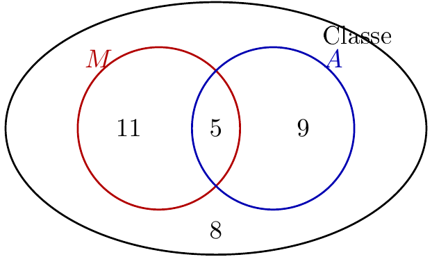
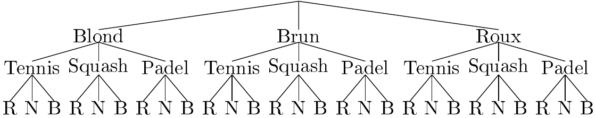

Chapitre 11 : Combinatoire et dénombrement
Terminale spécialité · Chapitre 11 — Combinatoire et dénombrement · cours de Frederik de Peyrelongue
I. Principe additif et principe multiplicatif
1.1 Notion de dénombrement
- Un ensemble $E$ est fini lorsqu'il admet un nombre fini d'éléments.
- Le nombre d'éléments de $E$ est appelé le cardinal de l'ensemble et il est noté $\Card(E)$ ou $|E|$.
- Dénombrer, c'est compter le nombre d'éléments que contient un ensemble fini, c'est-à-dire en déterminer le cardinal.
L'ensemble $E$ des faces d'un dé est un ensemble fini. Alors $\Card(E)=6$.
L'ensemble $\mathbb{N}$ des entiers naturels n'est pas un ensemble fini. Mais c'est un ensemble dénombrable.
Remarque. Tout ensemble en bijection avec l'ensemble $\mathbb{N}$ est dénombrable.
On dit que deux ensembles sont disjoints s'ils n'ont aucun élément en commun.
1.2 Principe additif
Soit $E_{1}$, $E_{2}$, …, $E_{k}$, $k$ ensembles finis deux à deux disjoints.
Alors
Soit $E_{1}=\{a\,;b\,;c\}$ et $E_{2}=\{\alpha\,;\beta\,;\gamma\,;\mu\}$.
Alors $E_{1}$ et $E_{2}$ sont disjoints et on a :
Méthode : dénombrer avec un diagramme de Venn
Dans une classe, deux options sont proposées : Maths Expertes et Arts plastiques. On sait que $16$ élèves font Maths Expertes, $14$ Arts plastiques, $5$ ont les deux options et $8$ n'en pratiquent aucune. Calculer le nombre d'élèves de cette classe.

Correction.
Soit $A$ l'ensemble des élèves qui font Arts plastiques et $M$ l'ensemble des élèves qui font Maths Expertes. On a
et $8$ élèves ne pratiquent aucune des deux options.
On ne peut pas utiliser le principe additif car les ensembles $A$ et $M$ ne sont pas disjoints. On schématise alors la situation à l'aide d'un diagramme de Venn.
On en déduit le nombre d'élèves de la classe en utilisant le principe additif sur des ensembles disjoints, soit :
1.3 Principe multiplicatif
On considère les $3$ ensembles suivants :
Les hommes choisissent un sport et un short de façon aléatoire.
On appelle produit cartésien $E_{1}\times E_{2}\times E_{3}$ l'ensemble de tous les triplets formés d'un élément de $E_{1}$, d'un élément de $E_{2}$ et d'un élément de $E_{3}$.
On peut modéliser la situation par un arbre :

Il existe $3\times 3\times 3=27$ triplets différents.
Soit $k$ ensembles finis $E_{1}$, $E_{2}$, …, $E_{k}$.
- Le produit cartésien $E_{1}\times E_{2}$ est l'ensemble des couples $(a_{1}\,;a_{2})$ où $a_{1}\in E_{1}$ et $a_{2}\in E_{2}$.
- Le produit cartésien $E_{1}\times E_{2}\times E_{3}$ est l'ensemble des triplets $(a_{1}\,;a_{2}\,;a_{3})$ où $a_{1}\in E_{1}$, $a_{2}\in E_{2}$ et $a_{3}\in E_{3}$.
- Le produit cartésien $E_{1}\times E_{2}\times\dots\times E_{k}$ est l'ensemble des $k$-uplets $(a_{1}\,;a_{2}\,;\dots\,;a_{k})$ où $a_{1}\in E_{1}$, $a_{2}\in E_{2}$, …, $a_{k}\in E_{k}$.
Soit $k$ ensembles finis $E_{1}$, $E_{2}$, …, $E_{k}$. Alors on a :
Méthode : appliquer le principe multiplicatif
Un restaurant propose sur sa carte $3$ entrées, $4$ plats de résistance et $2$ desserts.
- Combien de menus différents composés d'une entrée, d'un plat et d'un dessert peut-on constituer ?
- Même question si le dessert est une tarte aux pommes imposée.
Correction.
a) Soit $E$ l'ensemble des entrées, $P$ celui des plats et $D$ celui des desserts. On considère alors les triplets de la forme $(\text{entrée},\ \text{plat},\ \text{dessert})$, éléments de $E\times P\times D$.
D'après le principe multiplicatif, on a :
Il existe $24$ menus différents.
b) $\Card(E\times P)=\Card(E)\times\Card(P)=3\times 4=12$.
Il existe $12$ menus différents dont le dessert est une tarte aux pommes.
II. $k$-uplets et permutations
2.1 Dénombrement des $k$-uplets
Ici, l'ordre des éléments compte et les éléments peuvent se répéter.
Si on effectue un produit cartésien d'un ensemble sur lui-même, on note $E\times E=E^{2}$.
On lance par exemple deux dés à six faces. On note $E=\{1\,;2\,;3\,;4\,;5\,;6\}$ l'ensemble des résultats possibles pour un dé.
Alors $E^{2}$ est l'ensemble des couples possibles correspondants aux résultats du lancer de deux dés. On a par exemple :
D'après le principe multiplicatif, il existe $6\times 6=6^{2}$ couples possibles.
En effet, on a par exemple $(1\,;2)\neq(2\,;1)$.
Soit un ensemble fini $E$ à $n$ éléments. Alors le nombre de $k$-uplets d'éléments de $E$ est égal à
Méthode : dénombrer des $k$-uplets
\begin{itshape} « Il y avait pour entrer juste un digicode
Deux lettres et dix chiffres incommodes
Un détail que t'avais sûrement oublié
4 milliards de possibilités » \end{itshape}
Correction.
Soit $A$ l'ensemble des lettres de l'alphabet et $N$ l'ensemble des chiffres. On a alors $\Card(A)=26$ et $\Card(N)=10$.
Pour le choix des $2$ lettres, on compte le nombre de couples d'éléments de $A$ :
Pour le choix des $10$ chiffres, on compte le nombre de $10$-uplets d'éléments de $N$ :
Nombre de possibilités du digicode :
Soit environ $7\,000$ milliards de possibilités, et non pas $4$ milliards comme dans la chanson.
À noter. En pratique, un digicode contient généralement deux lettres possibles ($A$ et $B$) et le code est souvent composé d'une lettre suivie de $4$ chiffres. Par exemple : $B5633$.
Dans ce cas :
Pour retrouver les $4$ milliards de la chanson, il faudrait utiliser un tel digicode avec un code composé de deux lettres suivies de $9$ chiffres :
2.2 Dénombrement des $k$-uplets d'éléments distincts
Ici, l'ordre des éléments compte et les éléments ne se répètent pas.
On considère l'ensemble $E=\{a\,;b\,;o\,;p\,;r\}$.
- $(b\,;o\,;a)$ et $(r\,;a\,;p)$ sont des triplets d'éléments distincts de $E$.
- $(b\,;a\,;r\,;b\,;a\,;r)$ n'est pas un $6$-uplet d'éléments distincts de $E$, car des éléments se répètent.
- $(p\,;r\,;o\,;b\,;a)$ est un $5$-uplet différent de $(b\,;a\,;p\,;r\,;o)$ : l'ordre des éléments est à prendre en compte.
Calculons par exemple le nombre de triplets d'éléments distincts de $E$.
- Il existe $5$ choix pour la première lettre.
- La première lettre étant fixée, il existe $4$ choix pour la deuxième lettre, car il n'y a pas répétition d'éléments.
- Les deux premières lettres étant fixées, il existe $3$ choix pour la troisième lettre.
En appliquant le principe multiplicatif, le nombre de triplets d'éléments distincts de $E$ est égal à $5\times 4\times 3=60$.
Soit $E$ un ensemble fini à $n$ éléments, et $k\leqslant n$.
Un $k$-uplet d'éléments distincts de $E$ est un $k$-uplet pour lequel tous les éléments sont différents.
Un $k$-uplet d'éléments distincts est également appelé arrangement de $k$ éléments parmi $n$.
On appelle factorielle $n$ le produit de tous les nombres entiers de $1$ à $n$, et on note
Remarque. $n!$ se lit « factorielle $n$ ».
Soit $E$ un ensemble fini à $n$ éléments. Le nombre de $k$-uplets d'éléments distincts de $E$ est égal à
Méthode : dénombrer des arrangements
Pour nettoyer un appareil électrique, Fred débranche les $3$ prises qui se trouvent à l'arrière de l'appareil. Mais au moment d'effectuer à nouveau les branchements, il se rend compte qu'il existe $12$ positions différentes pour les $3$ prises. Comme il n'a pas pris soin de noter les positions respectives des $3$ prises et qu'il n'y connaît rien en électronique, il décide d'effectuer les branchements au hasard.
Quelle est la probabilité qu'il retrouve le bon branchement ?
Correction.
Fred doit choisir $3$ positions parmi $12$. L'ordre a une importance : on voit que les prises sont de différentes couleurs.
Il existe $12$ positions possibles pour la première prise. Celle-ci étant fixée, il existe alors $11$ positions pour la deuxième et ainsi $10$ positions pour la troisième prise.
En appliquant le principe multiplicatif, le nombre de positions possibles est égal à
On peut également considérer les triplets d'éléments distincts (arrangements de $3$ éléments parmi $12$), soit :
Parmi les $1\,320$ positions, une seule est la bonne. La probabilité que Fred retrouve le bon branchement est donc égale à
2.3 Dénombrement des permutations
Ici, l'ordre des éléments compte et les éléments ne se répètent pas.
On considère l'ensemble $E=\{1\,;2\,;3\,;4\,;5\}$.
$(1\,;3\,;2\,;5\,;4)$ et $(5\,;1\,;2\,;3\,;4)$ sont des $5$-uplets qui utilisent tous les éléments de $E$. On les appelle des permutations de $E$.
Soit $E$ un ensemble fini à $n$ éléments.
Une permutation de $E$ est un $n$-uplet d'éléments distincts de $E$.
Remarque. Une permutation d'un ensemble à $n$ éléments est un $n$-uplet d'un ensemble à $n$ éléments : pour une permutation, on a $k=n$.
Soit $E$ un ensemble fini à $n$ éléments. Le nombre de permutations de $E$ est égal à $n!$.
Il existe $3!=6$ façons différentes que $3$ personnes s'assoient sur un banc à $3$ places.
Méthode : dénombrer des permutations
Pour une conférence, on a invité $12$ scientifiques, $6$ hommes et $6$ femmes renommés, qui seront placés au premier rang de la salle, laquelle comprend $12$ places. On attend $5$ mathématiciens, $3$ physiciens et $4$ biologistes.
C'est le moment de prendre place, l'organisateur demande aux scientifiques de s'installer.
- Les mathématiciens proposent que chacun choisisse une place au hasard.
- Les physiciens préfèrent rester ensemble et qu'ainsi tous les physiciens soient assis côte à côte.
- Les biologistes disent qu'il serait mieux que les hommes se placent ensemble et que les femmes en fassent de même.
Calculer le nombre de façons différentes de s'asseoir pour chaque proposition.
Correction.
Proposition des mathématiciens. Le nombre de façons de placer ces $12$ scientifiques est égal au nombre de permutations dans un ensemble à $12$ éléments, soit :
Proposition des physiciens. Le groupe des physiciens est composé de $3$ personnes. Vu qu'ils souhaitent s'asseoir côte à côte, le groupe dispose de $10$ positions possibles : les places $1$-$2$-$3$, ou $2$-$3$-$4$, ou $3$-$4$-$5$, …, ou $10$-$11$-$12$.
Au sein du groupe des physiciens, le nombre de façons de s'asseoir est égal au nombre de permutations d'un ensemble à $3$ éléments, soit $3!=6$.
Au sein du groupe formé par les autres scientifiques, le nombre de façons de s'asseoir est égal au nombre de permutations d'un ensemble à $12-3=9$ éléments, soit $9!=362\,880$.
Donc, d'après le principe multiplicatif, le nombre total de façons de s'asseoir selon les physiciens est égal à
Proposition des biologistes. Le nombre d'ordres possibles pour placer le groupe des femmes et celui des hommes est égal à $2$ : hommes-femmes ou femmes-hommes.
Au sein du groupe des femmes, le nombre de façons de s'asseoir est égal au nombre de permutations d'un ensemble à $6$ éléments, soit $6!=720$. De même pour le groupe des hommes : $6!=720$.
Donc, d'après le principe multiplicatif, le nombre total de façons de s'asseoir selon les biologistes est égal à
III. Combinaisons
3.1 Nombre de combinaisons
Ici, l'ordre des éléments n'a pas d'importance et les éléments ne se répètent pas.
On considère l'ensemble $E=\{1\,;2\,;3\,;4\,;5\}$.
Le sous-ensemble $\{1\,;2\,;3\}$ est appelé une combinaison de $E$ à $3$ éléments. Le sous-ensemble $\{2\,;5\}$ est appelé une combinaison de $E$ à $2$ éléments.
Pour une combinaison, l'ordre n'a pas d'importance : ainsi $\{1\,;2\}$ et $\{2\,;1\}$ correspondent à la même combinaison de $E$.
Soit $E$ un ensemble fini à $n$ éléments, et $k\leqslant n$.
Une combinaison de $k$ éléments de $E$ est un sous-ensemble de $E$.
Soit $E$ un ensemble fini à $n$ éléments. Le nombre de combinaisons de $k$ éléments de $E$ est égal à
Ce nombre se note $\dbinom{n}{k}$.
Cas particuliers. Pour tout entier naturel $n$ :
Méthode : dénombrer des combinaisons
Une classe composée de $18$ filles et $16$ garçons va élire les $4$ délégués. Dans cet exercice, on ne distingue pas les délégués et les délégués-adjoints.
- Combien existe-t-il de possibilités pour cette élection ?
- Emma dit qu'elle ne souhaite pas être élue si Bastien est élu. Dans ces conditions, combien existe-t-il de possibilités ?
Correction.
a) On compte le nombre de combinaisons de $4$ élèves parmi $18+16=34$ élèves, soit :
b) On commence par compter le nombre de possibilités telles qu'Emma et Bastien soient élus.
Si Emma et Bastien sont élus, il reste à choisir $2$ élèves parmi $32$, soit le nombre de combinaisons de $2$ élèves parmi $32$ élèves, soit encore :
Ainsi, dans ce cas, le nombre de possibilités est égal à
3.2 Coefficients binomiaux
Le nombre $\dbinom{n}{k}$ de combinaisons de $k$ parmi $n$ porte également le nom de coefficient binomial, en référence à une loi de probabilité : la loi binomiale, qui est définie à l'aide des coefficients $\dbinom{n}{k}$. Celle-ci sera étudiée dans le chapitre « Loi binomiale ».
Pour tout entier naturel $k$ tel que $0\leqslant k\leqslant n$,
Pour tout entier naturel $k$ tel que $0\leqslant k\leqslant n$,
Démonstration au programme.
Méthode : calculer des coefficients binomiaux
Calculer : a) $\dbinom{25}{24}$ b) $\dbinom{4}{2}$.
Correction.
a) Par symétrie,
b) D'après la propriété du triangle de Pascal,
Or
donc
3.3 Le triangle de Pascal
Le grand tableau qui suit s'appelle le triangle de Pascal. Il se complète de proche en proche.
On a, par exemple, dans le tableau : $10+5=15$.
Le triangle de Pascal peut être utilisé pour lire rapidement les coefficients binomiaux. Par exemple, pour $n=4$ et $k=2$, on a $\dbinom{4}{2}=6$.
| $k$ | $0$ | $1$ | $2$ | $3$ | $4$ | $5$ | $6$ |
| $n=0$ | $1$ | ||||||
| $n=1$ | $1$ | $1$ | |||||
| $n=2$ | $1$ | $2$ | $1$ | ||||
| $n=3$ | $1$ | $3$ | $3$ | $1$ | |||
| $n=4$ | $1$ | $4$ | $6$ | $4$ | $1$ | ||
| $n=5$ | $1$ | $5$ | $10$ | $10$ | $5$ | $1$ | |
| $n=6$ | $1$ | $6$ | $15$ | $20$ | $15$ | $6$ | $1$ |
On retrouve la propriété du triangle de Pascal :
Et de façon générale, on a
Un peu d'histoire. Blaise Pascal (1623 ; 1662) fait la découverte d'un triangle arithmétique, appelé aujourd'hui « triangle de Pascal ». Son but est d'exposer mathématiquement certaines combinaisons numériques dans les jeux de hasard et les paris. Cette méthode était déjà connue des Perses, mais aussi du mathématicien chinois Zhu Shi Jie (XIIe siècle).
3.4 Parties d'un ensemble
Soit $E$ un ensemble fini à $n$ éléments. Le nombre de sous-ensembles de $E$ est égal à
Le nombre de sous-ensembles de $E$ est égal à la somme des sous-ensembles à $0$ élément, à $1$ élément, à $2$ éléments, …, à $n$ éléments. Soit :
\[ \binom{n}{0}+\binom{n}{1}+\binom{n}{2}+\dots+\binom{n}{n}. \]- Par ailleurs, pour construire un sous-ensemble de $E$, on considère $n$ étapes où, à chaque élément de $E$, on décide de le choisir ou de ne pas le choisir pour l'inclure dans le sous-ensemble.
Il y a donc deux possibilités par étape, et il y a $n$ étapes.
Il y a donc $2\times 2\times\dots\times 2$ ($n$ facteurs) possibilités d'obtenir un sous-ensemble de $E$, soit $2^{n}$.
Soit $E=\{1\,;2\,;3\}$. Alors toutes les parties de $E$ sont :
Elles sont au nombre de $8$. En effet, ici $n=3$ et $2^{3}=8$.
3.5 Pour résumer : arrangement, permutation, combinaison ?
On choisit $k$ éléments dans un ensemble à $n$ éléments.
| Résultat ordonné ? | Répétition ? | Formule | Exemple |
| oui | oui | $k$-uplets : $n^{k}$ | 1 |
| oui | non | arrangements : $\dfrac{n!}{(n-k)!}$ | 2 |
| oui | non, avec $k=n$ | permutations : $n!$ | 3 |
| non | non | combinaisons : $\dbinom{n}{k}=\dfrac{n!}{k!\,(n-k)!}$ | 4 |
Exemple 1. Nombre de mots composés de $3$ lettres de l'alphabet ?
Ordonné, avec répétition : nombre de triplets d'un ensemble à $26$ éléments, soit $26^{3}$.
Exemple 2. Nombre de mots composés de $3$ lettres de l'alphabet, toutes différentes ?
Ordonné, sans répétition : nombre de triplets d'éléments tous distincts (arrangements) d'un ensemble à $26$ éléments, soit $26\times 25\times 24$.
Exemple 3. Nombre d'anagrammes du mot « MDR ».
Ordonné, sans répétition : nombre de permutations à $3$ éléments, soit $3!$.
Exemple 4. Nombre de possibilités de tirer simultanément $3$ jetons parmi $6$ jetons marqués de $6$ lettres toutes différentes.
Non ordonné, sans répétition : nombre de combinaisons de $3$ éléments parmi $6$, soit $\dbinom{6}{3}$.